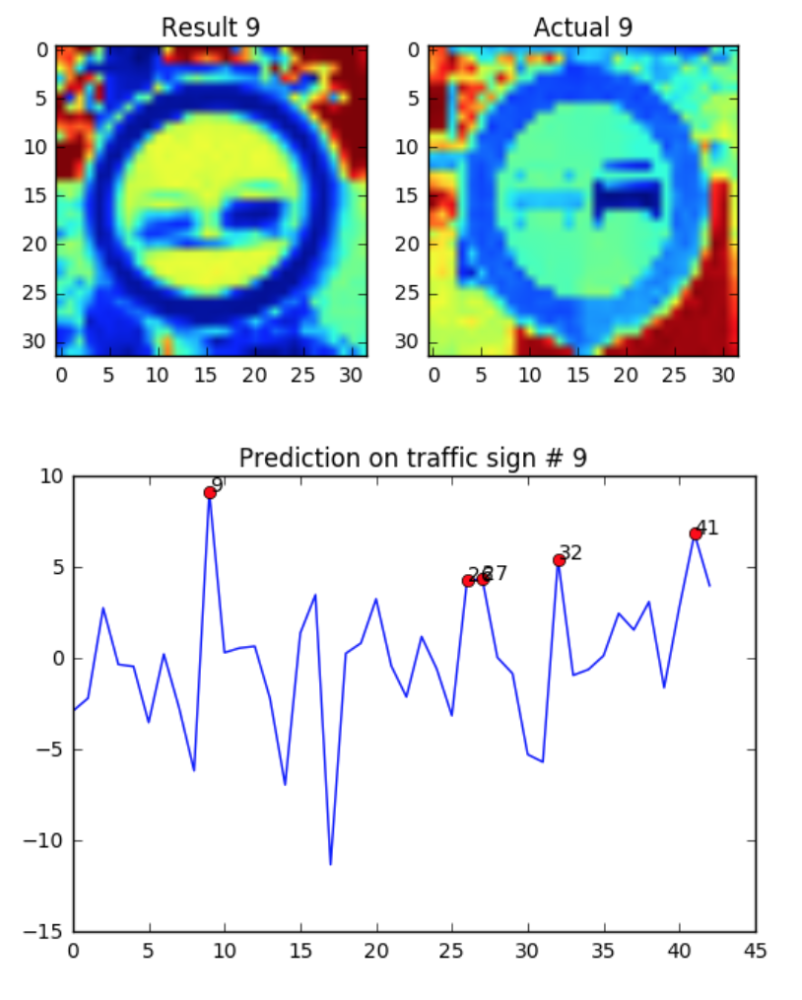

Featured Work
Computer Vision

Finding lanes and coloring the area of the path where a car can go.
Camera Calibration, Perspective Transform, Sobel Operator, and HLS Color Space.
Used Python, OpenCV
This is one of Self-Driving Car Engineering Nanodegree Projects from Udacity
I developed the deep learning model that classifies the traffic signs from real-time photos.
My model consists of Convolutional Neural Layers, Drop Out, Stochastic Gradient Decsent Optimizer, and ReLu.
I used Python with TensorFlow.
Please follow this link to see more details about the project.
This is one of Self-Driving Car Engineering Nanodegree Projects from Udacity
I developed the deep learning model for a car to drive autonomously through behavioral cloning.
The model consists of Convolutional Neural Layers, Drop Out, Stochastic Gradient Decsent Optimizer, Adam Optimizer, and ReLu.
I used Python with Keras and TensorFlow.
Please follow this link to see more details about the project.
This is one of Self-Driving Car Engineering Nanodegree Projects from Udacity
Research Experience for Undergraduate (REU) May 2013 – Aug 2014
Undergraduate Research in Computational Mathematics (URCM) sponsored by the National Science Foundation (NSF).
Research Advisor: Professor Timothy Sauer
Research Title: "Reconstruction of video data using SVD with delays of time frames.”
Abstract: Singular Value Decomposition (SVD) is a matrix factorization that can be used to compress or filter data. We apply this idea to reconstruct nonlinear video acquired with noise. Our goal is to interpret the correlation of the time frames of the data and cancel the noise using delays of time frames.
Please follow this link to see the poster of my research.
This is the personal project to get used to using Python to solve various differential equations.
The scripts are from Differential Equations Online Course from Udacity.
In my Github repository there are 3 projects.
Simple animation of the moon and the earth circulating around the sun.
SEIR model using Forward Euler Method.
Modeling a physical phenomenon, wildfire, using PDE (heat equation)
Please follow this link to see more details about the project.